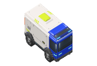
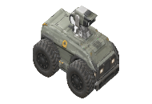
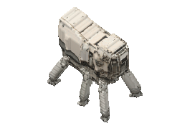

Cargo Rover
Auto Patrol
Manual
Reset
Status
Loading
Speed
0 px/s
FPS
—
Frame Time
— ms
Render CPU
— ms
◀
▶
↶
↷
Reverse
Forward

Cargo Rover

Inspection Robot

Ant Mech
Custom Four-View Asset
Open Four-View PNG
Boost · Shift
Ready
Rendering
Marching Cubes
Multi-View Texturing
Material Lighting
Detail Normals
Subpixel AA
Specular AA
Mobility
Defaults
Spacing
1.00
Layers
90
Texture Resolution
1.50×
Preparing four-view input…
Environment & Props
Defaults
Prop Spacing
1.00
Floor Brightness
100%
Squash
0.75
Scale
1.00×
Supersampling 2×
Loading props
Reset Props